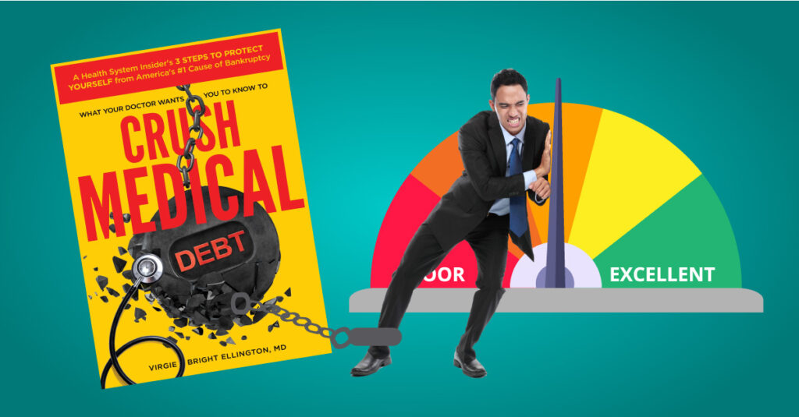
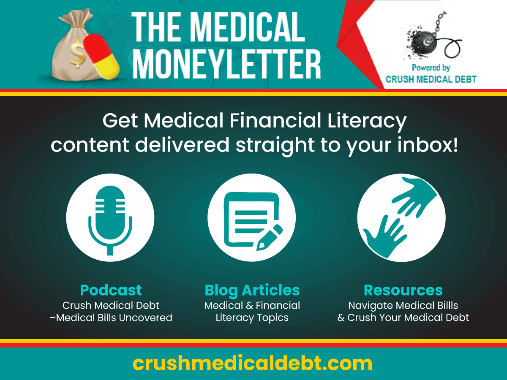

Medical debt is a reality for over 100 million people and the primary cause of bankruptcy in the U.S., even though the majority have health insurance. However, even with great medical insurance, a stressful health crisis can spiral into a financial disaster and a lifetime of medical debt.
But what if we told you that medical bills, the root of this financial problem, are riddled with mistakes? Surprisingly, about 80% of these bills carry errors. Even more alarming is the fact that some of these “mistakes” may not be errors at all but intentional acts by billing departments and insurance companies.
Navigating this complex landscape requires not just financial literacy but also basic medical financial literacy. Understanding your medical bills, your annual deductible, the ins and outs of your health plan, and even the coding errors is crucial in battling this issue.
That’s where we at Crush Medical Debt come in. Our mission is to help you navigate medical bills and understand how to avoid and eliminate medical debt.
The Crisis of Medical Debt
It’s no secret that the American healthcare system can be a complex maze to navigate. Many people find themselves armed with great medical insurance, but still woefully unprepared for the financial impact of a health emergency. What seems to be a sturdy safety net can unravel when faced with the harsh reality of high deductibles and out-of-pocket expenses.
Studies show the average American has less than a thousand dollars tucked away in their savings account for emergencies. More alarming, about 22% of Americans have no emergency savings at all. This lack of financial cushion makes a sudden health crisis even more daunting.
High Deductibles and Out-of-Pocket Costs Bring Debt to the Insured
An annual deductible is the amount you pay out of pocket before your insurance kicks in. This means that you are essentially uninsured until you meet this deductible. Since 2010, when the Affordable Care Act was passed, the average individual deductible for employer-sponsored health insurance plans has more than doubled to $1,992 in 2024! And the average deductible for an individual bronze plan from the ACA Marketplace (Obamacare) reached a staggering $7,258 in 2024! So, even those with robust health coverage like Blue Cross Blue Shield, United Healthcare, Aetna, or other insurance companies often find themselves unable to meet their deductible and out-of-pocket expenses.
With the cost of healthcare continually rising, medical bills can rapidly accumulate, leading to a cycle of medical debt that can be difficult to break free from. This situation is made even more complex because medical bills are notoriously hard to decipher, with coding errors and other discrepancies often inflating the final total.
The truth is, when an emergency hits, most people are more concerned about getting the medical attention they need, rather than verifying the accuracy of their medical bills. This can lead to a lifetime of medical debt, a burden that affects not just the individual but their families too.
So, how do we navigate this crisis? By understanding the system, asking the right questions, and taking control of our personal finance decisions.
Understanding Medical Bills and Insurance
Medical bills can often feel like they’re written in a foreign language. From understanding the plan type you have, to decoding your Explanation of Benefits, it can all seem overwhelming. However, having a grasp on these terms can make a significant difference in your medical financial literacy and medical debt.
Some Basic Health Insurance and Cost Sharing Terms
- A health plan is simply the type of health insurance or healthcare coverage you or your employer have selected. Each plan offered has different terms for what is covered and what isn’t.
- The annual deductible is the amount you’re required to pay out-of-pocket for your healthcare before your insurance company starts to pay its share. Depending on your plan type, this can vary widely.
- A copay is the upfront amount you must pay when using your insurance, such as a copay for a prescription or visit to your provider.
- Coinsurance is your portion of the medical expenses that you are on the hook to pay after insurance pays its share. For example, silver-level plans typically pay 80%, leaving you on the hook to pay the other 20%.
- Nonqualified healthcare expenses are any healthcare services or items your insurance plan doesn’t pay for. Depending on your health plan, this usually includes things like alternative medicine, supplements, elective, or cosmetic procedures.
- The Explanation of Benefits (EOB) is a document that comes from your insurance company, detailing what they’ve paid to your healthcare provider and what, if anything, you have to pay.
- Current Procedural Terminology (CPT) codes appear on itemized medical bills and describe the medical procedures and services you receive. They are like price bar codes used by insurance companies to classify treatments and process your claims.
Medical Bills and Billing Code Errors
Coding errors are a major contributor to mistakes in medical bills. You wouldn’t believe it, but a whopping 80% of medical bills contain mistakes. Often, these aren’t simple oversights but deliberate actions taken by billing departments to inflate the total bill.
Some Common Coding Errors:
- incorrect patient information
- incorrect dates
- overcharges for procedures
- duplicate charges
- preventive care coded as diagnostic care
- emergency care coded as non-emergent
- charges for treatments never received
- inflated visit length of face-to-face time with the provider
Spotting Common Medical Bill Mistakes
So, how can you spot these medical bill mistakes? First, always apply the 3 Steps to Pay Medical Bills. In Step 2, compare your itemized medical bill with the Explanation of Benefits (EOB) you receive from your insurance company. Look out for any discrepancies in dates, treatment codes, and charges. If something doesn’t add up, don’t hesitate to question it.
Armed with this basic knowledge, you’re better equipped to communicate effectively with your healthcare provider and insurance company. The next time you get a medical bill, don’t be in a rush to pay it. Instead, take some time to go over it. Your wallet will thank you.
Medical Financial Literacy and Your Debt Future
Beyond the immediate threat of medical debt, it’s crucial to understand how it can impact your overall financial health in the long run. For starters, unpaid medical bills can severely damage your credit report and credit score.
A low credit score, derived from your credit report, can lead to higher interest rates on loans and credit cards, or even outright rejection of your applications. This can limit your options for financing, jobs, and housing. Learn more about medical debt and its effect on your credit in our article, How To Remove Medical Debt From Credit Reports.
To avoid such scenarios, it’s vital to get on top of your debts, including your medical bills, as soon as possible. Compound interest is the interest calculated on the initial principal, which also includes all the accumulated interest of previous periods. This means the amount you owe can quickly balloon if you’re not making consistent payments.
Achieving financial literacy goes hand in hand with medical financial literacy. By understanding terms like credit report, credit score, and compound interest, you are more equipped to make informed financial decisions. Remember, financial knowledge is your greatest weapon against a lifetime of medical debt.

Crush Medical Debt: Your Partner in Medical Financial Literacy
With medical debt looming as a pervasive problem, medical financial literacy has never been more important. This is where Crush Medical Debt comes in.
At Crush Medical Debt, our mission is to help you navigate the confusing landscape of medical bills and health plans, and equip you with the tools and knowledge you need to make informed financial decisions. We aim to empower you to spot medical bill errors, understand the terms of your insurance policy, and manage your annual deductible effectively.
We understand that everyone’s situation is different, which is why we provide a range of resources and support tailored to your unique needs. Whether you’re dealing with coding errors or trying to understand an explanation of benefits, our team of experts is here to help.
With Crush Medical Debt, you’re not alone in your journey to conquer medical debt. By fostering medical financial literacy, we help you guard against future medical debt, giving you peace of mind and financial security.
Start by signing up for our free Medical MoneyLetter and have our blog content, podcast, and resources delivered straight to your inbox! Don’t let medical debt control your life – take charge with us today.

Takeaways
- Medical bills can damage your credit report and credit score, leading to higher interest rates and problems getting credit cards, jobs, and housing.
- It’s essential to scrutinize your itemized medical bills (with CPT codes) for errors.
- Thoroughly understand your health plan’s costs, coverage, and exclusions, and always compare your itemized medical bills with your Explanation of Benefits.
- Crush Medical Debt is here to arm you with medical financial literacy to conquer medical debt and bring financial wellness.
- As you increase your financial literacy, you’ll find yourself better equipped to handle unexpected medical expenses, manage your finances more effectively, and ultimately avoid a lifetime of medical debt.